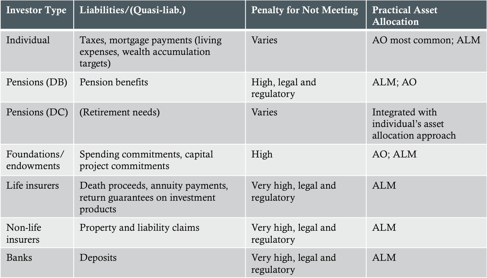
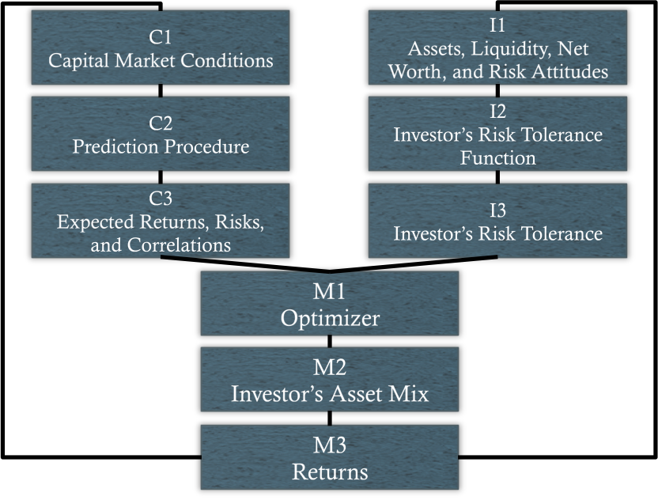
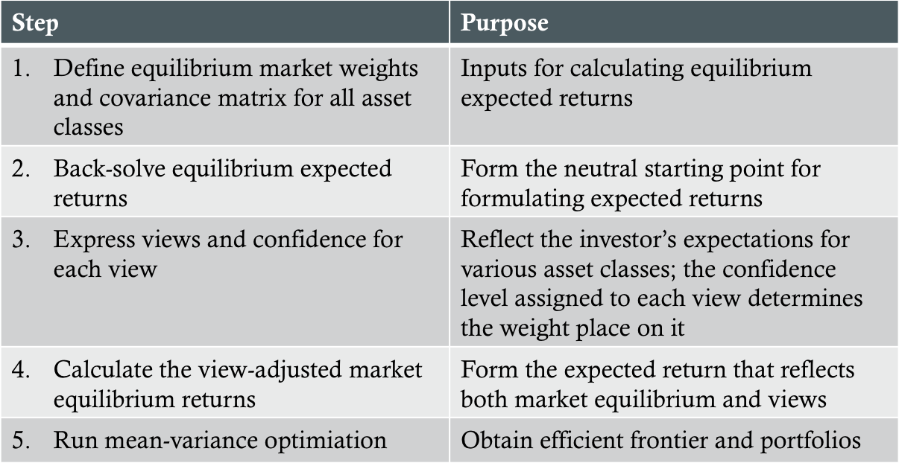

Strategic asset allocation (SAA) - Establishing exposures to IPS-permissible asset classes by considering both long-run capital market expectations and an investor's return objectives, risk tolerance, and investment contraints
Specifies the investor's desired exposures to systematic risk under normal conditions
Tactical asset allocation (TAA) - Involves making short-term adjustments to asset-class weights based on short-term expected relative performance among asset classes
Asset-Only and Asset/Liability Management Approaches to SAA
Asset/liability management (ALM)
Asset-only (AO)
Cash flow matching
Immunization
Dynamic vs. static
Liability Concerns of Various Investors

SAA Risk and Return Objectives
Return objectives should include both qualitative and quantitative objectives
Risk objectives should include a qualitative assessment (e.g. low, average, high), based on the investor's willingness and ability to take risk, as well as a quantitative component
Assets within an asset class should be relatively homogeneous
Asset classes should be mutually exclusive
Asset classes should be diversifying
As a group, the asset classes should make up a preponderance of the world's investable wealth
The asset class should have the capacity to absorb a significant fraction of the investor's portfolio without serious affecting the portfolio's liquidity
Including International Assets
To determine whether to include another asset class in a portfolio using a mean-variance framework:
Calculate Sharpe ratio of new asset class
Calculate Sharpe ratio of existing portfolio
Calculate correlation between return of new asset class and return of portfolio
Add the new asset class if:
[E(Rnew)-RF]/σnew > [[E(Rp-RF]/σp]×Corr(Rnew,Rp)
Asset Allocation Steps

Optimization
The mean-variance approach
Efficient frontier
Global minimum-variance portfolio
Unconstrained vs. sign-constrained MVF
Corner portfolios
Black-Litterman Approach

Monte Carlo Simulation and SAA
Definition: Involves the calculation and statistical description of the outcomes resulting in a particular SAA under random scenarios
ALM, SAA, and Monte Carlo Simulation
Determine the surplus efficient frontier and select a limited set of efficient portfolios, ranging from the MSV portfolio to higher-surplus-risk portfolio, to examine further
Conduct a Monte Carlo simulation for each proposed asset allocation and evaluate which allocations, if any, satisfy the investor's return and risk objectives
Choose the most appropriate allocation that satisfies those objectives
Implementing the SAA
Implementation Choices
Passive investing
Active investing
Semi-active investing or enhanced indexing
Some combination of the above
Passive Investing Alternatives
A tracking portfolio of cash market securities designed to replicate the returns to a broad investable index representing that asset class
A derivatives-based portfolio consisting of a cash position plus a long position in a swap in which the retruns to an index representing that asset class is received
A derivatives-based portfolio consisting of a cash position plus a long position in index futures for the asset class
Active Investing Alternatives
A portfolio of cash market securities that reflects the investor's perceived special insights and skill and that also makes no attempt to track any asset-class index's performance
A derivatives-based position to provide commodity-like exposure to the asset class plus a market-neutral long-short position to reflect active investment ideas
Semi-Active Investing Alternatives
A tracking portfolio of cash market securities that permits some under- or overweighting of securities relative to the asset-class index but with controlled tracking risk
A derivatives-based position in the asset-class plus controlled active risk in the cash position
SAA for Individual Investors
Introduction
Asset allocation must account for:
Portion of wealth flowing from current and future labor income, and the changing mix of financial and labor-income-related wealth as a person moves through life
Any correlation of current and future labor income with financial asset returns
The possibility of outliving one's resources
Human Capital
Definition: The PV of expected future labor income
One's ability and willingness to take risk depends on:
Personality makeup
Current and future needs
Current and anticipated future financial situation
Mortality risk - the risk of loss of human capital if an investor dies prematurely
Longevity risk - the risk that an investor will outlive her assets in retirement
Tactical Asset Allocation (TAA)
Definition: Involves deliberately under- or overweighting asset classes relative to their target weights in the policy portfolio in an attempt to add value
Based on three principles:
Market prices tell explicity what returns are available